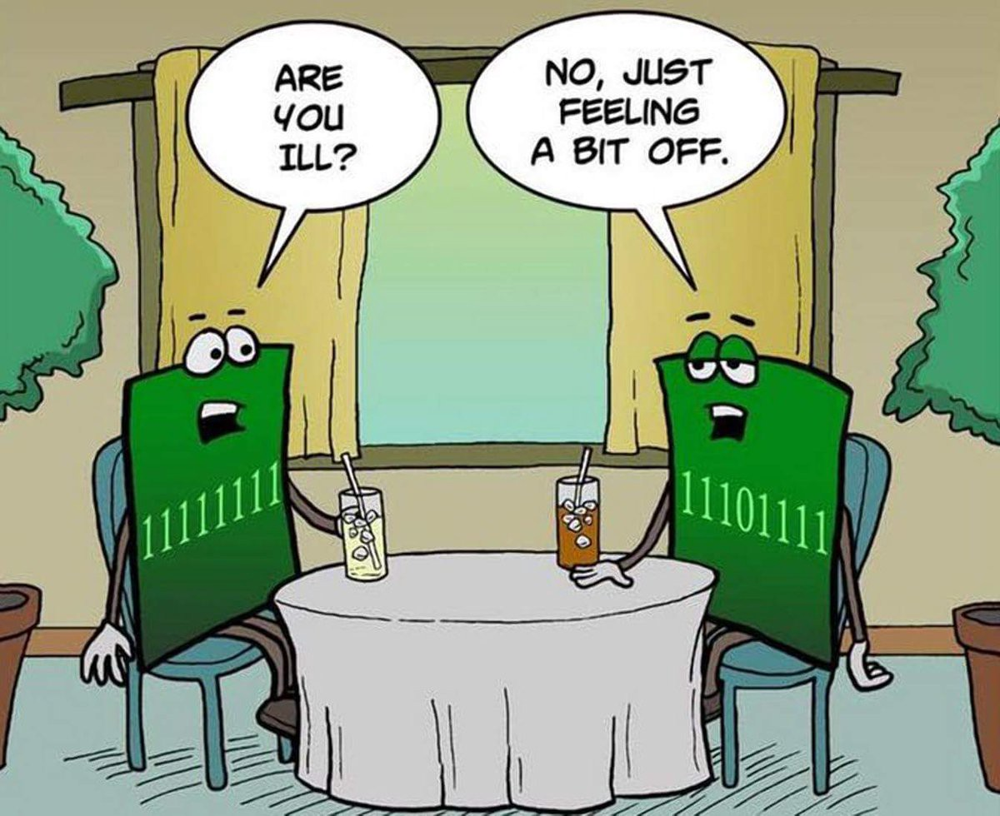

Just a blog post
January, 30, 2017
First post and hopefully not the last one. Trying to get myself back into the coding mindset which seems to be alot harder then you think while in school. I seem to always be working on something that doesn't seem to be as much value as just learning about small things such as how to link stylesheets for CSS. If I don't work on something often I tend to forget it and that is already starting to hinder my coding motivation, so lets change it. Let's talk about it and lets change it and CODE!!!
“Don’t think about why you question, simply don’t stop questioning. Don’t worry about what you can’t answer, and don’t try to explain what you can’t know. Curiosity is its own reason. Aren’t you in awe when you contemplate the mysteries of eternity, of life, of the marvelous structure behind reality? And this is the miracle of the human mind — to use its constructions, concepts, and formulas as tools to explain what man sees, feels and touches. Try to comprehend a little more each day. Have holy curiosity.” — Albert Einstein
Here Goes Another One
Januray, 31, 2017
Not really a post persay but just 2 things I came accross that I thought I might enjoy throwing up
"I am prepared for the worst, but hope for the best" - Benjamin Disaraeli
Day After Biking
February, 3, 2017
Finally decided to put this out into the wild still not fully stoked on it based on my poorer editing abilities but it will turn into instagram stuff like everything does nowadays lol
So it's long school day Friday and i'm hella hurting from riding bikes last night. Can't stop won't stop though!! I have also signed up for a python course to start working on a bit more code because like I have been saying since the start of this whole thing we definatly don't do enough coding and for me to start learning more I have to do more. I'm excited to see what comes from it all 😁
Just A Quick Thought And Read
February, 6, 2017
So here we go again another week of school... Fingers crossed I'm able to alter my thought process and get a bit more on track for both school and lifing. I have decided to try out a new thing even outside the initial blogging, it is to
organize my social media life much more aka to limit myself and take the icons and semi hide them from the initial screens I look at to help keep my mind clear and not be tempted to click in and get lost while just browsing nothingness.
I also came across a really amazing article on Medium.com
"Better Yourself"
"Effort only fully releases it's reward after a person refuses to quit." - Napoloean Hill
Another Blog Post But With Some Very Serious Happiness
February, 13, 2017
So today I finally worked on code, actually javascript code and built a small pong style game and I'm really excited and thought I should not only make a quick blog post about it but also show it within the blog post 😝 I don't fully have the best grasp of it all quite yet but I feel as long as I keep at it it's nothing but learning so there is know way it will be bad for me.
"Love the giver more than the gift." - Brigham Young
Doing A Non Jekyll Blog Post Whoops
February, 18, 2017
Not much to post today but check this cool animation out, I thought it was awesome.
"It is never to late to be what you might have been." - George Elliot
Name AnimationI Really Need To Get My Jekyll Stuff Figured Out Asap
February, 19, 2017
Probably shouldn't even fully consider this a post but more of just a way to say what I am doing lol and what I decided to go ahead and do today. So the weather outside in a February in Ontario,Canada is absolutely insane and I have been able to go on road bike rides....? That doesn't even make logical sense to younger me but I guess that's what global warming is all about. Anyways I decided to get to the book store and pick up what I believe should be a really good help to my javascript program learning.
"A fool and his money soon part." 🤔 - Thomas Tusser
